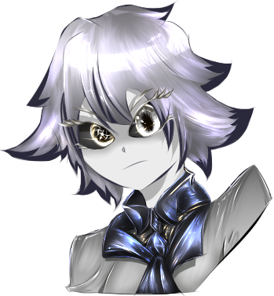

White Face
 |
Descrición: |
Resurgidos de la muerte, los White face alguna vez fueron un last shadow pero gracias a la generosidad de Katharnidios, los last shadow pudieron vivir entre el mundo de los mortales, como una mera fachada o ilusión. |
La historia de su origen nos lleva al fin de la época del caos, Katharnidios estaba sumamente arrepentida que querÃa cometer cada acto de bondad con tal de tratar curar las heridas inmensas cual grietas, aunque sea con pequeñeces, estaba desesperada por volver a ganarse el respeto de sus hermanos. Debido a esto Katharnidios decidió ayudar a su hermana, Morthis, para que los Last Shadow pudieran tener una mejor vida una vez su labor se acabara. Allà es donde nacerÃan estos sujetos. Portando la hoja Last shadow como su fiel arma de ilusiones, una extensión de su cuerpo y ser. |
Son ilusionistas tan poderosos que ni los ojos de un raysoul son capaces de diferenciar con exactitud. Y los Más mortÃferos Last Shadows no son ni detectados por deidades o por los raysoul, solo usuarios del caos o una suprema podrÃa detectar su magia mortÃfera. No los malinterpretes, no son asesinos a sueldo, al contrario, buscan una especie de vida pacÃfica. Pero no confÃan en nadie y mucho menos en deidades que solo velan por sus propios intereses. Ellos conocen mejor que nadie la cara de la muerte y no confiarán a la ligera de nada ni nadie. |
Estilo: Ilusionista. |
Atributos: Flexible, Peligroso, Rolear, Asesino, Especialista. |
Dificultad: ââââââ |
Dificultad de rol: ââââââ
|
Requisito de prueba: MAESTRO.
|
EstadÃsticas del White Face: |
+2 Agilidad. |
+2 Letalidad. |
+1 INT. |
+1 SAB. |
+1 DES. |
-1 CON. |
-1 FUE. |
Habilidades del White Face: |
💀Terror ilusivo💀: (6💀). |
Regeneración de 💀Terror ilusivo💀: 3💀. |
Inmunidad al Terror. |
Regenera 30% de sus PG máx. cada que inicia su turno. |
No posee pasivas, en su lugar tiene un poder más brutal. |
+1 a la precisión por nivel. |
⚔️Ilusión y guadañas⚔️ |
→ El White face puede lanzar sus habilidades desde sus ilusiones. |
→ El White face es invisible hasta que él decida dejar de serlo o reciba un ataque. |
→ Todas sus habilidades de tipo /Ilusión tienen un efecto particular que les permite generar ilusiones de todo tipo. Estas habilidades se debe declarar como quiere utilizarse. |
👻Ilusión👻 o 👁️Real👁️, las versiones 👁️Real👁️, deben lanzarse desde el propio White face. |
Posee la acción ♟️Mortuosa♟️, le permite lanzar ciertas habilidades. |
Solo posee ♟️. |
Habilidades básicas: |
🧿👁️👻Guadaña/Ilusión👻👁️🧿 (E/B/♟️) |
👁️⚔️Guadaña Real⚔️👁️ |
Lanza un corte de energÃa anti vida que se expande hasta 15’. |
Inflige SAB/INT + 5 de daño por nivel verdadero. |
👁️O👁️ |
👻Guadaña Ilusión👻 |
Crea una ilusión peligrosa. |
La precisión de esta habilidad si supera las salvaciones de SAB/INT del enemigo, crea una 👁️⚔️Guadaña Real⚔️👁️ dentro de un rango de 30’ pies verdaderos. |
(Solo los afectados pueden ver una calamidad inminente)
Cuando tu desees esta se activará empezando a dar vueltas y dar un corte en 30’ pies verdaderos. |
La precisión de esta habilidad si supera TODAS las salvaciones del enemigo ⚰️La guaña se vuelve una camilidad real que inflige el doble de daño⚰️, luego desaparece. |
Alcance: 30’ pies verdaderos. |
Consume 1 💀. |
👥Deslumbrar👥 (B/♟️) |
Crea un parpadeo, puedes moverte a 30’ pies verdaderos. |
Puedes consumir 3💀, para evadir por medio de esta habilidad. |
(Solo puede usarse 1 vez por turno dicha evasión). |
👤Ilusión Pesada👤 (B/♟️) |
Crea una ilusión molesta. |
La precisión de esta habilidad si supera las salvaciones de SAB/INT del enemigo. |
→ Crea un 👻👥Señuelo sombra👥👻 en la mente de un enemigo. |
El objetivo afectado verá la ilusión de tu 👻👥Señuelo sombra👥👻. |
Puedes controlar esa ilusión para que haga una acción. |
La precisión de esta habilidad si supera TODAS las salvaciones del enemigo. |
→ ⚰️Crea otro señuelo adicional⚰️. |
Alcance 60’. |
Máximo 2 veces por turno. |
Consume 1 💀. |
🌍👁️🌍Terror soberano🌍👁️🌍 (E) |
Inflige terror a sus enemigos de manera desquiciada. Creando una ilusión de las pesadillas de la criatura. |
La precisión de esta habilidad si supera las salvaciones de SAB/INT del enemigo. |
→ +3 Terror y la siguiente habilidad del enemigo seleccionado será pifia. |
La precisión de esta habilidad si supera TODAS las salvaciones del enemigo. |
→ ⚰️La pesadilla de la criatura se vuelve real⚰️. |
Alcance 40’. |
Consume 1 💀. |
🗡️👥Reclamar Alma👥🗡️ (E/B) |
La precisión de esta habilidad si supera las salvaciones de SAB/INT del enemigo. |
→ Ejecuta a un enemigo que se encuentre a ¼ de vida. |
La precisión de esta habilidad si supera TODAS las salvaciones del enemigo. |
→ ⚰️El objetivo suicida su alma, ahora luchará contra lo primero que lo hagas ver⚰️. |
Máximo 1 vez por turno. |
Alcance: Global. |
 |
Novela
|
Novela